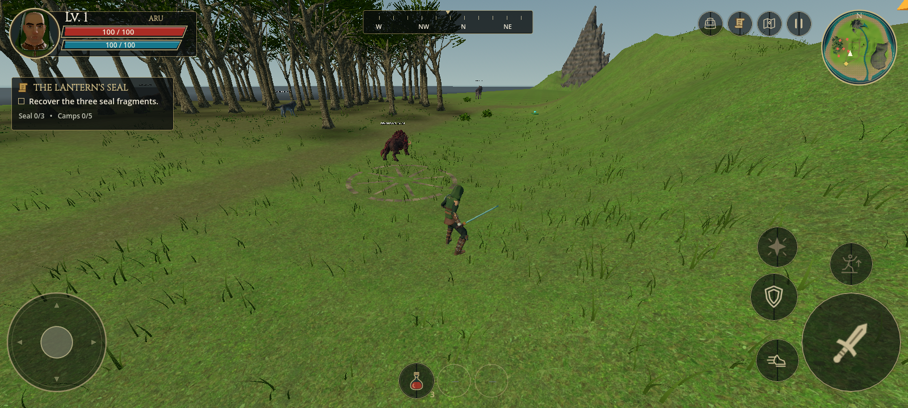
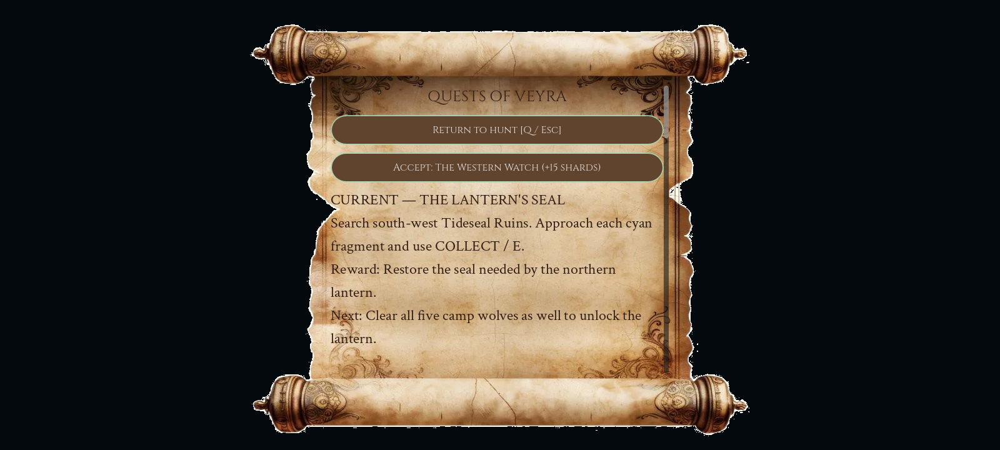
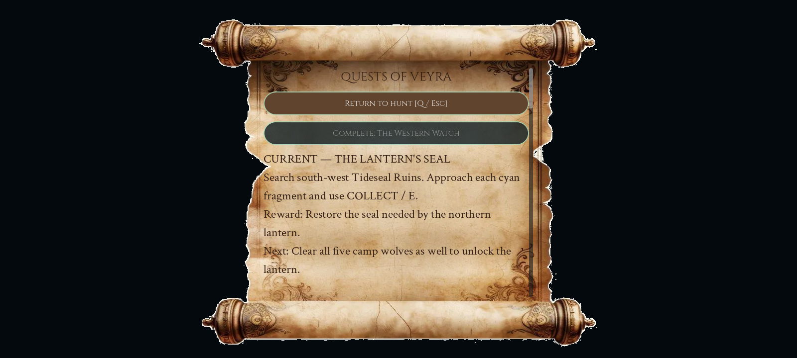
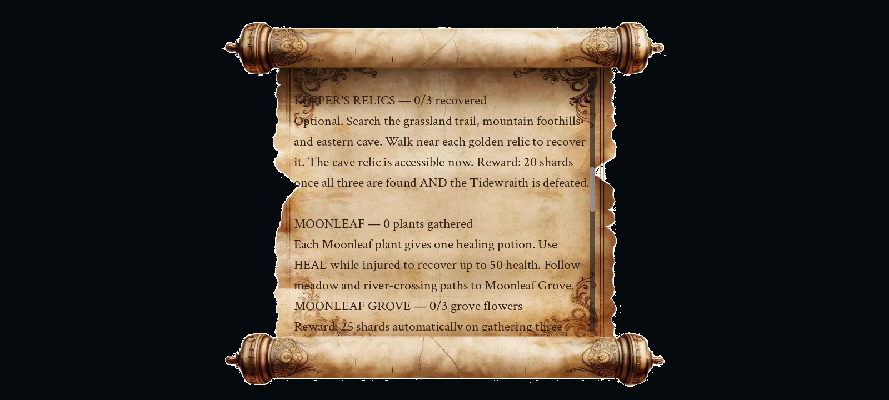
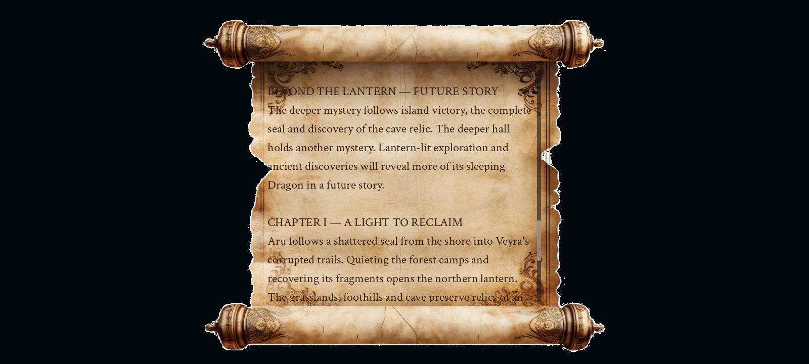
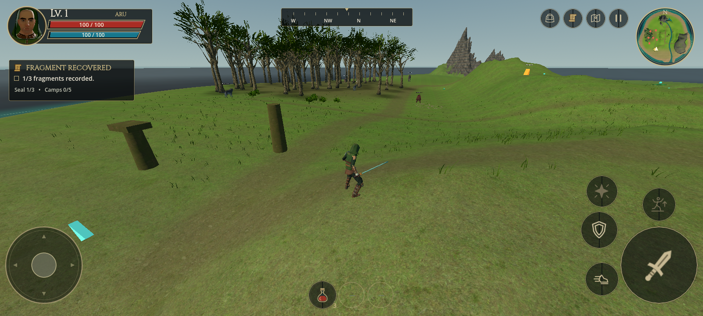
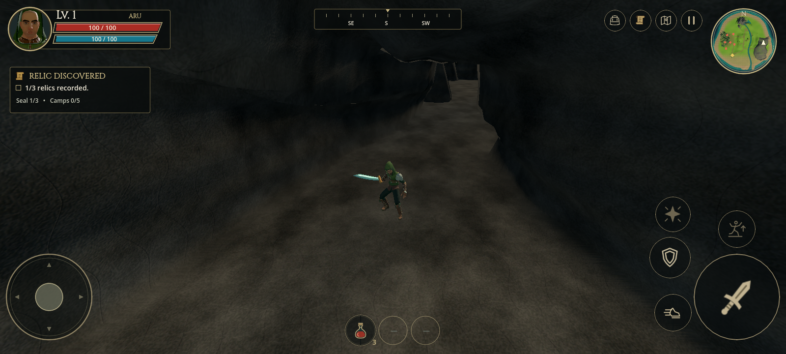
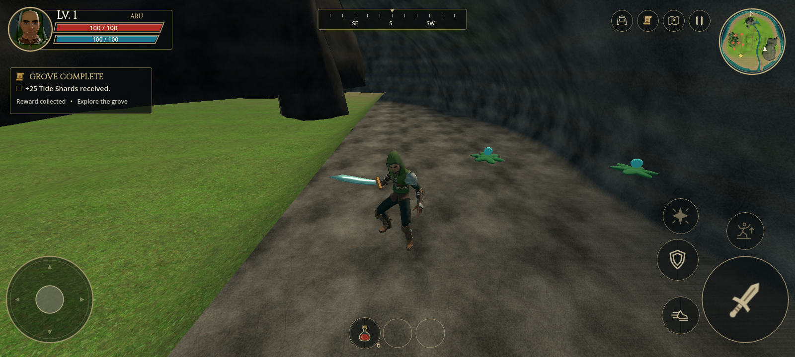
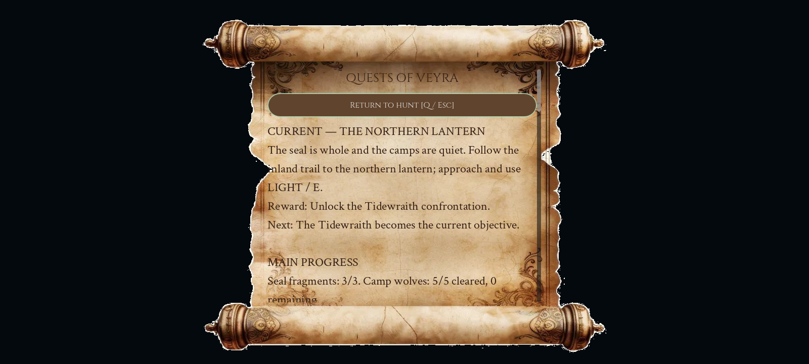
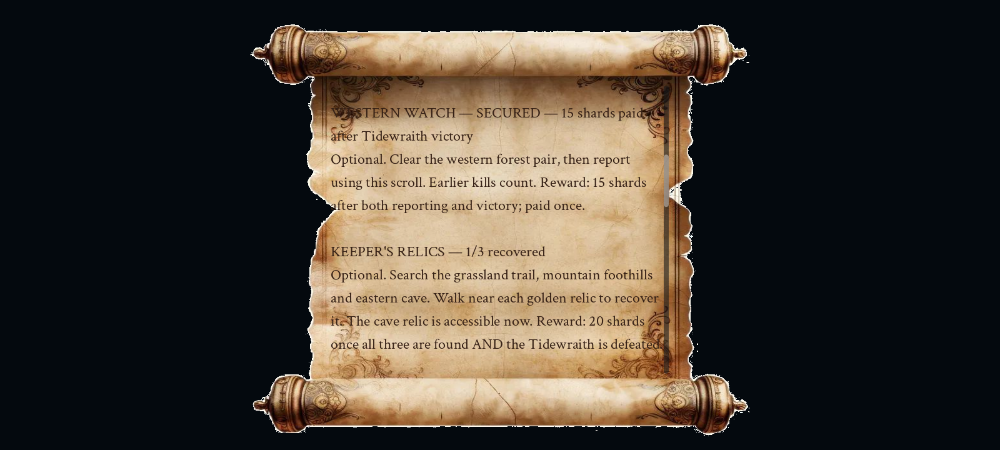

Chapter I — Quest foundation
Actual Windows Godot candidate captures. Existing systems, artwork, mobile controls and dark cave floor are preserved. Owner approval pending. No Android usability or performance claim.
Report · Quest audit · Dependencies · Tests · Preservation · Run candidate
Loading local evidence…
New Game Hud

Actual Godot · staged state/camera
New Game Scroll

Actual Godot · staged state/camera
Accepted Bounty Scroll

Actual Godot · staged state/camera
Optional Rewards Scroll

Actual Godot · staged state/camera
Future Story Scroll

Actual Godot · staged state/camera
Fragment Feedback Gameplay

Actual Godot · staged state/camera
Cave Relic Feedback Gameplay

Actual Godot · staged state/camera
Partial Progress Scroll

Actual Godot · staged state/camera
Grove Reward Gameplay

Actual Godot · staged state/camera
Lantern Ready Scroll

Actual Godot · controlled completion fixture
Bounty Secured Scroll

Actual Godot · controlled completion fixture